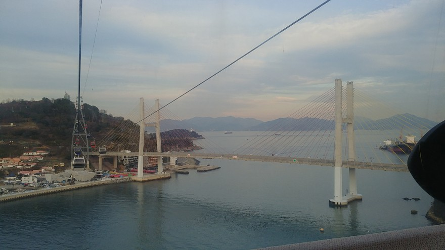
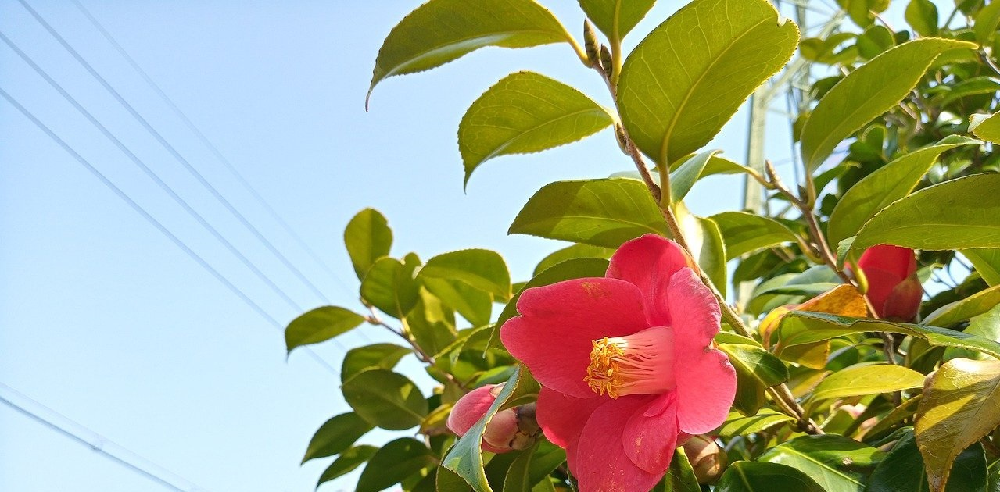
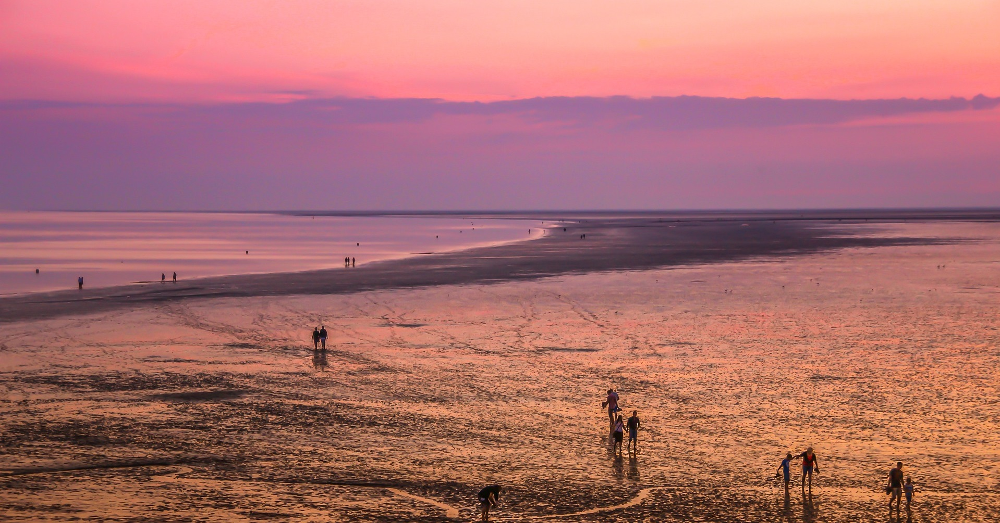
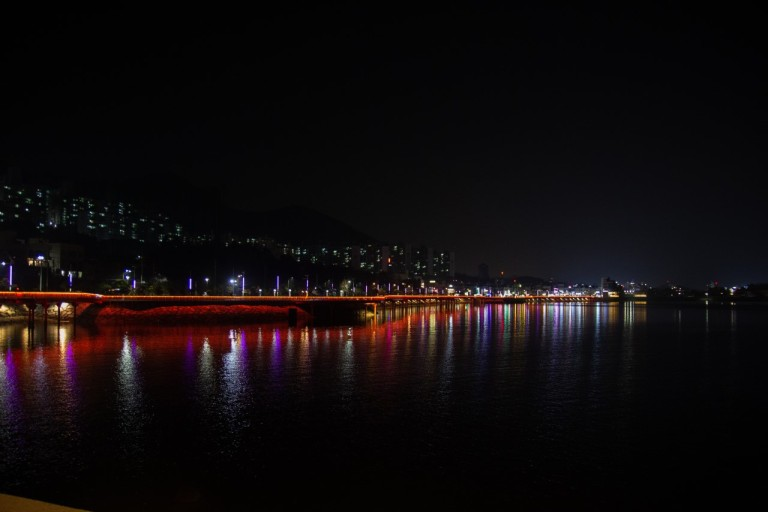

-

여수해상케이블카
전남 여수시 돌산읍 돌산로 3600-1
-

오동도
전남 여수시 수정동 산1-11
-

여자만갯벌노을행사
전라남도 여수시 종화동 458-7
-

여수밤바다
전라남도 여수시 종화동 458-7

팝업알리미


여수 10경

1경. 오동도
한폭의 그림처럼 어우러진 자연, 섬 자체가 하나의 동백꽃
2경. 거문도/백도
희귀조류와 식물들의 천국, 자연그대로를 간직한 섬
3경. 향일암
떠오르는 해와 함께 희망을 염원하며 하늘로! 일주문을 지나 만나는 새로운 세상
4경. 금오도 비렁길
작은 기암괴석이 신비로운 섬 금오도와 자연과 어우러진 다양한 비렁길 코스
5경. 여수세계박람회장
끝 없이 펼쳐진 바다와 다양한 공연, 이벤트로 하루종일 신나는 여수세계박람회장
6경. 진남관
충무공 이순신이 전라좌수영 본영으로 사용한 조선수군 구국 역사의 상징
7경. 여수밤바다
낭만과 황홀함이 넘치는 여수 도심 야경 함께 걷고싶은 여수밤바다
8경. 영취산 진달래
전국철쭉제의 으뜸! 온 산을 붉게 물들인 영취산에서 피는 진달래
9경. 여수해상케이블카
바다위를 지나 섬과 육지를 연결하는 국내최초의 해상케이블카
10경. 여수이순신대교
웅장함과 탁트인 바다전경이 일품, 여수에서 광양을 잇는 세계 최고 높이의 현수교